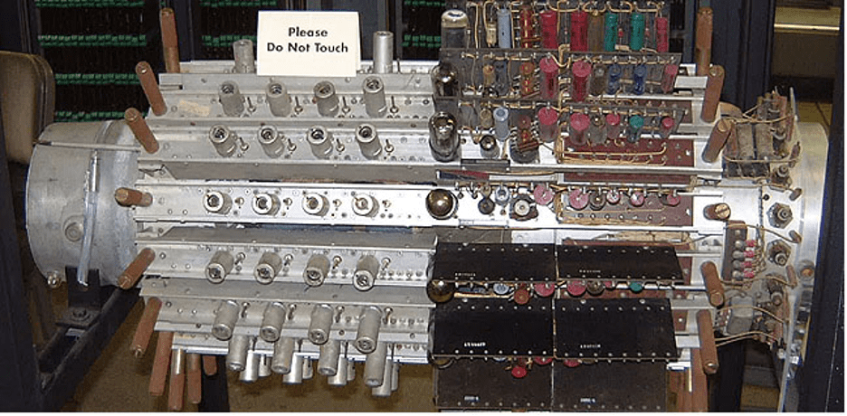

.svg)

.svg)
Компоненты первых компьютеров
В предыдущей статье была рассмотрена история появления и эволюции первых компьютеров в истории человечества. Теперь давайте разберём их внутреннее устройство.
Вакуумные лампы
Радиолампа представляет собой стеклянную колбу с электродами, из которой откачан воздух. Простейшая разновидность ламп — диод, состоящий из катода и анода, а также спирали, разогревающей катод до температур, при которых начинается термоэлектронная эмиссия. Электроны покидают катод и под действием разности потенциалов притягиваются к аноду. В обратном направлении заряд не переносится, так как заряженных ионов в колбе нет (вакуум). При изменении полярности электроны, покинувшие разогретый электрод, будут притягиваться обратно. До второго электрода они долетать не будут, отталкиваясь от него из-за отрицательного потенциала. Если добавить еще один электрод, то получится триод. В электровакуумном триоде устанавливается сетка между катодом и анодом. При подаче на сетку отрицательного потенциала она начинает отталкивать электроны, не позволяя им достичь анода. При подаче модулированного сигнала ток будет повторять изменения потенциала на сетке, поэтому изначально триоды использовали для усиления сигналов.
Радиолампа и схема триггера на двух триодах
Если взять два триода и соединить анод каждого с сеткой другого, то мы получим триггер. Он может находиться в одном из двух состояний: если через один триод идет ток (триод открыт), то на сетке второго триода появляется потенциал, препятствующий току через второй триод (триод закрыт). Если кратковременно подать отрицательный потенциал на сетку открытого триода, то мы прекратим ток через него, что откроет второй триод, который уже закроет первый. Триоды поменяются местами. Таким образом можно хранить один бит информации. Через другие схемы триодов можно строить логические вентили, реализующие конъюнкцию, дизъюнкцию и отрицание, что позволяет создать электронно-вычислительное устройство.
Запоминающее устройство
На первых порах развития ЭВМ использовались разные подходы к созданию запоминающих устройств. Помимо памяти на триггерах из радиоламп и на электромагнитных реле (как в Z3) имелись следующие виды:
- Память на магнитных барабанах.
- Память на электронно-лучевых трубках.
- Память на линиях задержки
Линии задержки
Основная идея линий задержки возникла в ходе разработки радаров во время Второй мировой войны. В первых ЭВМ в качестве линий использовались трубки с ртутью (у нее очень низкое затухание ультразвуковых волн), на концах которой располагались передающий и принимающий пьезокристаллы. Информация подавалась с помощью импульсов, модулированных высокочастотным сигналом. Импульсы распространялись в ртути. Информационная емкость трубки в битах равнялась максимальному количеству одновременно передаваемых импульсов. Единица кодировалось присутствием импульса на определенном «месте», ноль — отсутствием импульса. Приемный пьезокристалл передавал импульс на передающий — информация циркулировала по кругу. Для записи вместо регенерации импульсов вводились записываемые. Такой вид памяти использовался в компьютерах EDVAC, EDSAC и UNIVAC I.
Запоминающее устройство на ртутных акустических линиях задержки в UNIVAC I
Запоминающие электронно-лучевые трубки (трубки Уильямса)
При попадании электронного луча на точку на люминофорном экране происходит вторичная эмиссия и участок люминофора приобретает положительный заряд. Благодаря сопротивлению люминофорного слоя, точка долю секунды держится на экране. Однако, если не отключать луч сразу, а сдвинуть его в сторону от точки, рисуя тире, то электроны, испущенные во время эмиссии, поглощаются точкой, и та приобретает нейтральный заряд. Таким образом, если выделить N точек, то можно записать N бит информации (1 — нейтральный заряд, 0 — положительный заряд). Для считывания информации используется доска с электродами, прикрепленная к внешней стороне экрана. Электронный луч снова направляется в точку, и та приобретает положительный заряд независимо от изначального. С помощью электрода можно определить величину изначального заряда (значение бита), однако информация уничтожается (после каждого считывания нужна перезапись). Так как люминофор быстро теряет заряд, необходимо постоянно считывать и записывать информацию. Такой вид памяти использовался в Манчестерском Марк I и Ferranti Mark1, а также в американских IBM 701 и 702.
Трубка Уильямса
Магнитные барабаны
Магнитные барабаны чем-то похожи на современные магнитные диски. На поверхность барабана был нанесен тонкий ферромагнитный слой. Несколько считывающих головок, расположенных по образующим диска, считывают и записывают данные на своей отдельной магнитной дорожке.
Итог
Первые компьютеры были очень тяжелы и занимали огромное пространство, целые помещения строились специально под эти машины. Они шумели и потребляли огромное количество энергии. А виной всему было использование аналоговых технологий, которые были рассмотрены в статье.